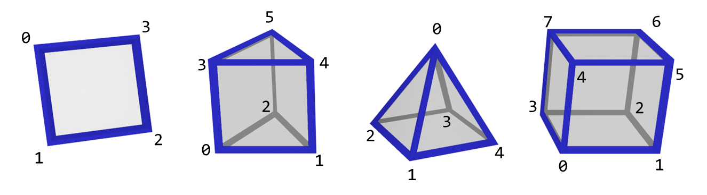

Simplex
The simplest shape that you can build for the N-dimension is called Simplex. Alternatively, every simplex-N has it own familiar name:
| #-Simplex | Name |
|---|---|
| 0-Simplex | Point |
| 1-Simplex | Segment |
| 2-Simplex | Triangle |
| 3-Simplex | Tetrahedron |
Why this is matter? While 3D mesh are built with either points, segments or triangles, Buffer4 will allow you to create models from many tethrahedron. The benefit is not just stop there, if you have seen Renderer4 then you know this legit dropdown:
{kind=link}
Can generate the same shapes, but in different simplexes:
{kind=link}
This can happen because in very basic level All Modeler4 should be restricted by its simplex mode:
public override void UploadBuffer(Buffer4 buffer)
{
// Build vertices here: buffer.AddVertex()
switch(buffer.simplex) // The buffer mode is determined internally based on the selected visualization mode
{
case SimplexMode.Point: /* build the model based on points: buffer.AddPoint() */ break;
case SimplexMode.Segment: /* build the model based on segments: buffer.AddSegment() */ break;
case SimplexMode.Triangle: /* build the model based on triangles: buffer.AddTriangle() */ break;
case SimplexMode.Tetrahedron: /* build the model based on tetrahedrons: buffer.AddTrimid() */ break;
}
}
Building Blocks
To make building model easier (despite the fact buffer.simplex may make things harder), Buffer4 uses a better way to build a model, that is based on Building Blocks.
In short summary you may use AddPoint() AddSegment() AddTriangle() AddTrimid() for each matching SimplexMode, but assuming these as a builing blocks, you can cross-use the functions together.
Cross-use benefits
Suppose you write this code:
public override void UploadBuffer(Buffer4 buffer)
{
buffer.AddVert(new Vector4(0,0,0,0));
buffer.AddVert(new Vector4(1,0,0,0));
buffer.AddVert(new Vector4(2,0,0,0));
buffer.AddTriangle(0, 1, 2); // vertex index
}
oh my bad, I didn't follow guideline. Should I fix it?
Not necessarily. Engine4 will adapt the code. This code:
buffer.AddTriangle(0, 1, 2); // vertex index
Is logically turned to this if buffer.simplex is SimplexMode.Point:
buffer.AddPoint(0); // vertex index
buffer.AddPoint(1); // vertex index
buffer.AddPoint(2); // vertex index
Or better yet, SimplexMode.Segment:
buffer.AddPoint(0, 1); // vertex index
buffer.AddPoint(1, 2); // vertex index
buffer.AddPoint(2, 0); // vertex index
This is because a triangle can be breaked down into segments or points. Engine4 will adapt the code for you.
However this didn't apply if buffer.simplex is higher in dimension than the shape itself:
// How do you logically break triangles to tetrahedron? (no idea)
If this happen, it simply does nothing.
Better Building Blocks
In addition to four primitive shapes, Buffer4 also has been equipped with additional common shapes to make things easier:
The illustration below explains the vertex sequence that should be follow for these additional building blocks:

Why need Tetrahedron?
Because cross section projection requires one higher level of given simplex mode. (more info here).
This means while Frustum4 requires the same level (e.g. Solid -> Triangle), CrossSection4 does need its higher level (e.g. Solid -> Tetrahedron).